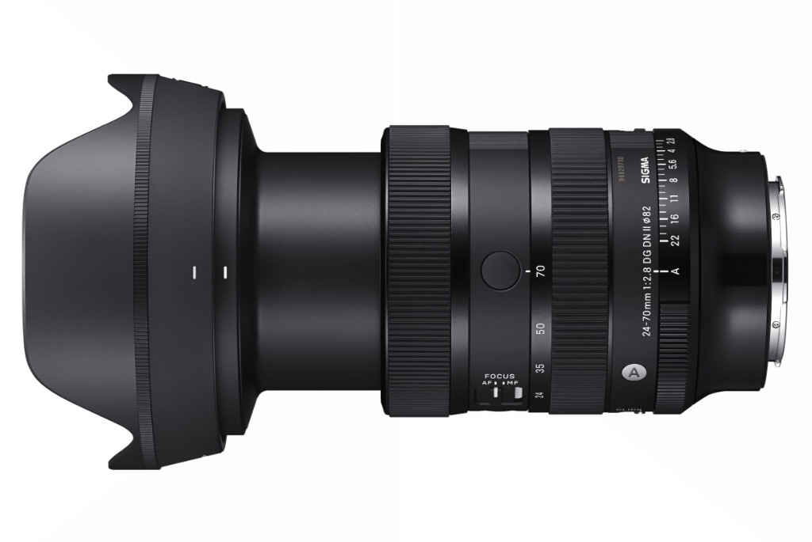

Sigma 24-70mm F2.8 DG DN Art II
Introduzione
Era da tempo che desideravo iniziare a scrivere articoli anche sul mio sito e non soltanto per realtà esterne. Devo molto ai ragazzi di Toscana Photo Service e a Vanguard, che mi supportano fin dall'inizio di questo percorso, ma è arrivato il momento di raccontare anche qui la mia esperienza sul campo. E quale miglior modo se non parlando dello zoom tuttofare per eccellenza che mi accompagna in ogni viaggio?
SIGMA ha inoltre avuto un ruolo cruciale nel mio percorso di crescita professionale: mi hanno guidato costantemente nello sviluppo sui canali social, dandomi tantissimi spunti, idee e soprattutto tantissime occasioni sul campo.
Perché proprio lui?
Se dovessi scegliere un solo obiettivo da portare su un'isola deserta o in una spedizione fotografica impegnativa, la scelta cadrebbe senza esitazioni sul Sigma 24-70mm F2.8 DG DN Art II. Negli anni ho provato decine di zoom standard, ma questa seconda generazione ha raggiunto un livello di perfezione costruttiva e nitidezza che lo rende il vero 'coltellino svizzero' del mio corredo.

Perché un 24-70 mm?
La focale 24-70mm è la colonna portante della fotografia di paesaggio e reportage. Consente di passare dall'ampiezza prospettica del grandangolo a 24mm per inquadrare panorami imponenti, fino alla compressione dei piani a 70mm per isolare cime montuose o dettagli architettonici. Tutto questo senza dover mai cambiare ottica in condizioni meteo avverse.
📊 Tabella: Confronto Focali & Applicazioni sul Campo
| Focale | Angolo di Campo (Diagonale) | Uso Principale sul Campo |
|---|---|---|
| 24 mm | 84.1° | Paesaggi aperti, cieli drammatici e reportage in spazi ristretti |
| 35 mm | 63.4° | Focale classica da storytelling con prospettiva naturale vicina all'occhio umano |
| 50 mm | 46.8° | Ritratti ambientati, dettagli di paesaggio e composizioni pulite |
| 70 mm | 34.3° | Isolamento soggetti, schiacciamento dei piani e vette montuose distanti |
Perché si compra un 24-70 mm F2.8?
Un diaframma costante f/2.8 su tutta l'escursione focale permette di lavorare in qualsiasi condizione di luce. Si acquista per avere la massima resa ottica a tutta apertura, un autofocus HLA (High-response Linear Actuator) ultra-veloce e silenzioso, e per la presenza di controlli fisici avanzati come la ghiera dei diaframmi sbloccabile con interruttore de-click.

Prestazioni diurne
Di giorno il Sigma 24-70mm Art II mostra un micro-contrasto tridimensionale straordinario. Già a f/2.8 il dettaglio al centro ed ai bordi è nitidissimo su sensori ad altissima risoluzione oltre i 60 Megapixel. Chiudendo a f/11 la stella del sole generata dal diaframma a 11 lamine è estremamente definita, rendendo superflui scatti multipli in post-produzione.


Prestazioni notturne
Nonostante sia uno zoom, la luminosità f/2.8 consente di utilizzarlo con successo anche in astrofotografia di paesaggio a 24mm. Il coma ed il flare notturno sono eccezionalmente sotto controllo, permettendo di registrare cieli stellati puliti con stelle puntiformi anche senza dover ricorrere a focali fisse dedicate.
Diffrazione
La tenuta ottica da f/2.8 fino a f/11 è praticamente perfetta. Tra f/11 ed f/14 il calo per diffrazione è minimo, consentendo la massima nitidezza per i paesaggi in grande formato. La filettatura frontale da 82mm permette inoltre l'utilizzo agevole di filtri polarizzatori e filtri ND a vite o a lastra.
Pregi e compromessi
La costruzione della versione Mark II ha ridotto significativamente peso e dimensioni rispetto al modello precedente. La presenza di due pulsanti AFL personalizzabili, del blocco dello zoom e della struttura totalmente tropicalizzata garantiscono la massima affidabilità anche durante trekking estremi.

✅ PRO
- Versatilità zoom 24-70mm impeccabile per ogni situazione
- Nitidezza chirurgica a f/2.8 da centro a bordo su 60MP+
- Autofocus HLA ultra-veloce, preciso e silenzioso
- Ghiera diaframmi fisica con switch de-click e lock
- Peso ridotto ed ergonomia migliorata della serie Mark II
❌ CONTRO
- Ingombro maggiore rispetto ad una singola ottica fissa
- Diametro filtri 82mm richiede filtri frontali dedicati
Conclusioni
Il Sigma 24-70mm F2.8 DG DN Art II è l'ottica che non manca mai nel mio zaino. Che si tratti di un reportage di viaggio, di un workshop sulle Dolomiti o di un'escursione veloce, garantisce una qualità d'immagine senza compromessi in ogni condizione.
Se vuoi testarlo sul campo durante i miei workshop, sarà un piacere fartelo provare direttamente sul tuo corpo macchina!